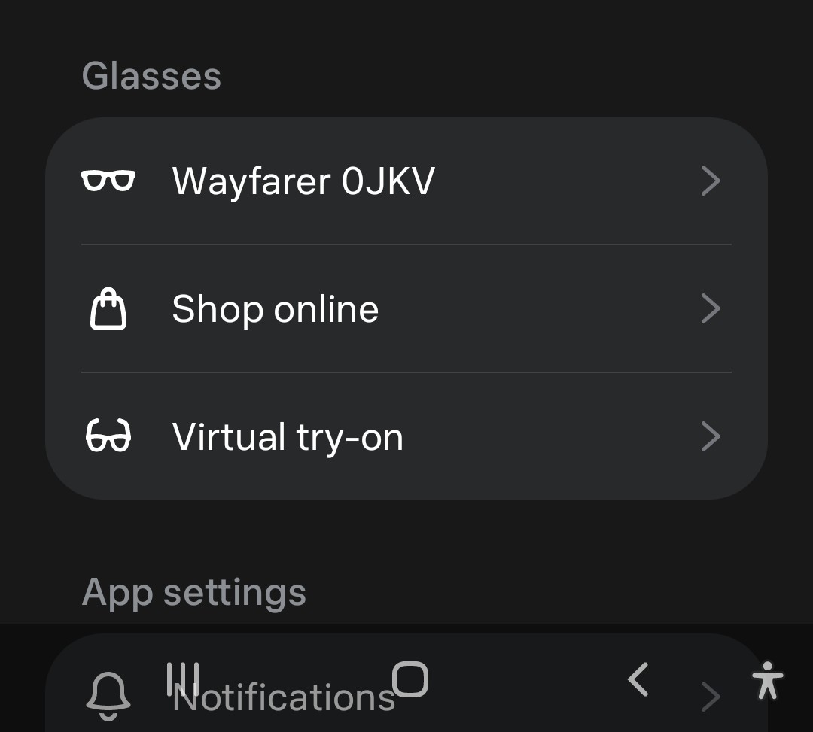
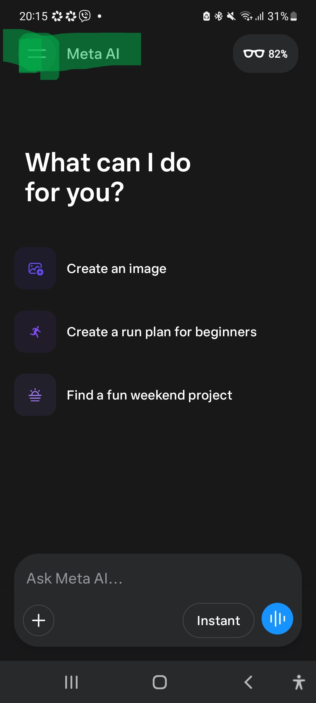
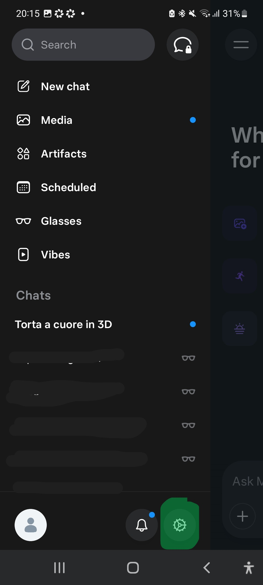
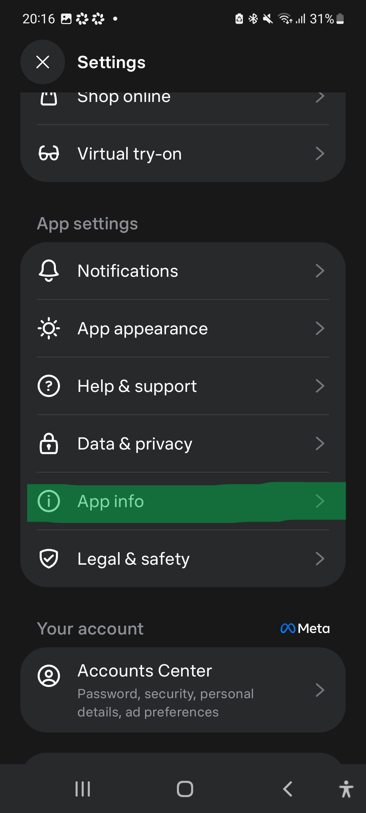
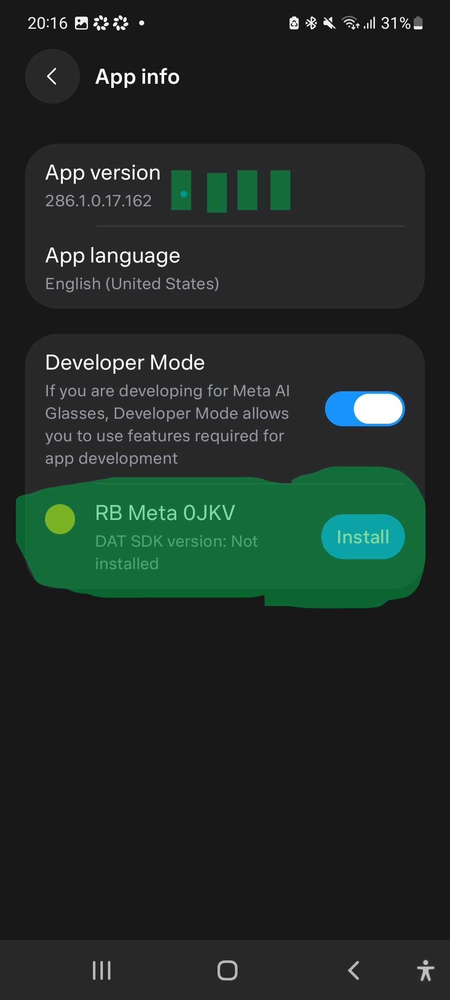
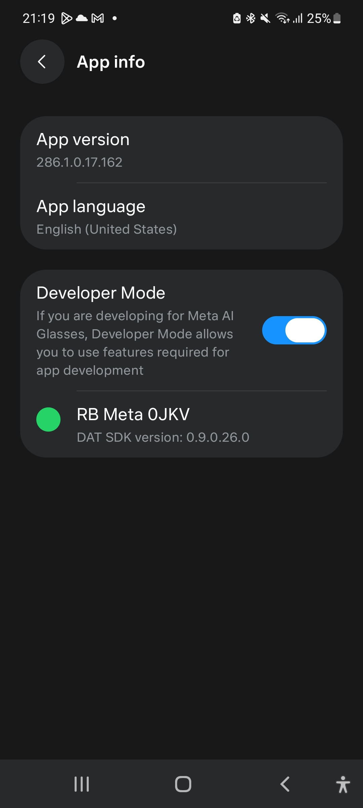
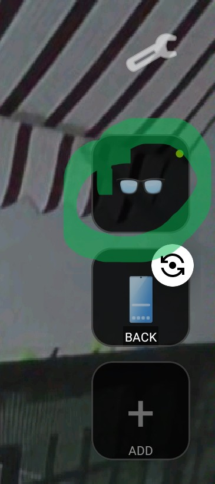
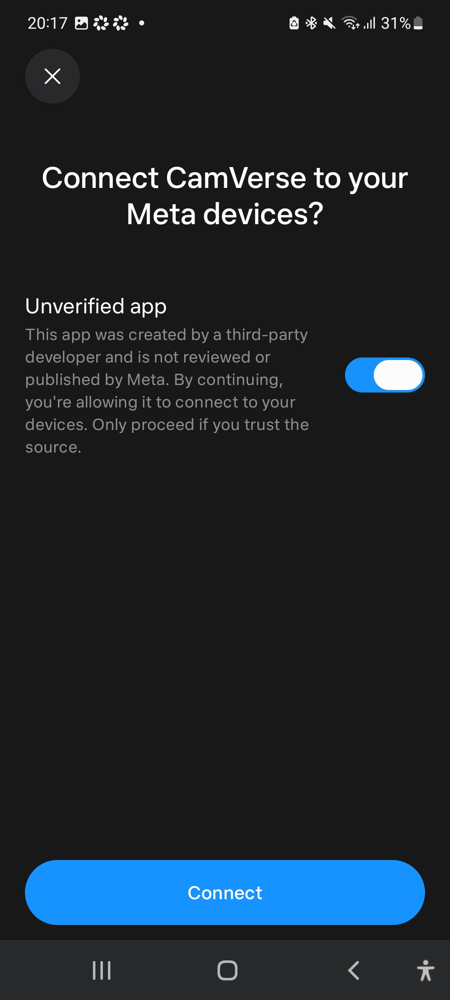
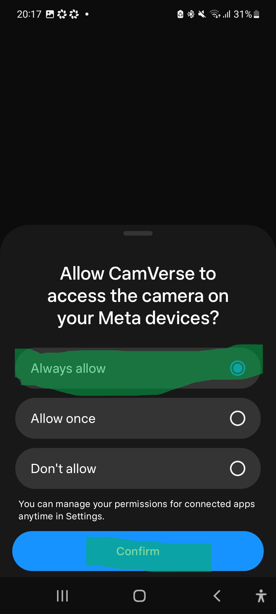
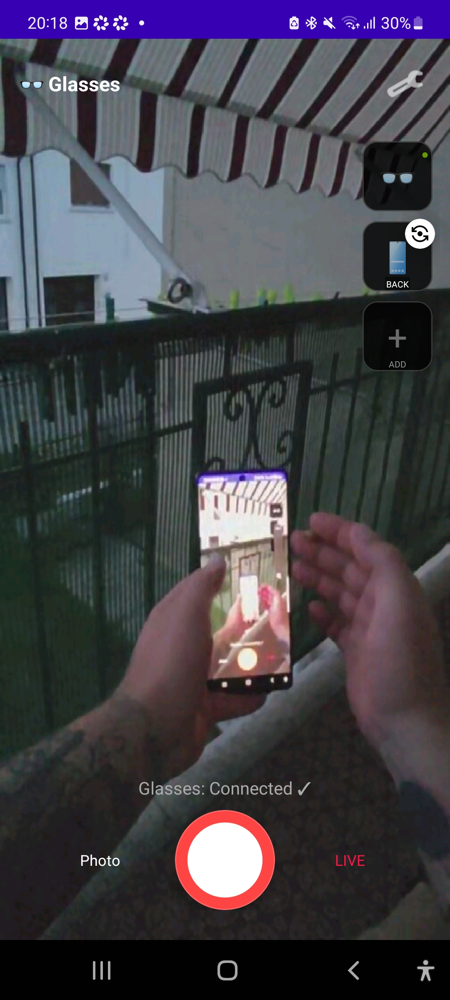

The glasses will not stream to any third-party app out of the box. Three things have to be
true first, and only one of them lives inside CamVerse. This page walks through all three,
in order, with the exact screens you will see.
~15 minutesAndroid 12 or newerRay-Ban Meta (all generations)Updated August 2026
Read this first
The single most common reason the glasses never connect is that the
DAT app is not installed on the glasses themselves. It is a separate
component from the Meta AI phone app, it is off by default, and nothing in CamVerse can
install it for you. That is step 6 — do not skip it.
What you need
✓Ray-Ban Meta glasses, charged above 30% and unfolded. Folded glasses refuse every streaming request — the hinge sensor gates the camera.
✓An Android phone on version 12 or newer. CamVerse will not install below that.
✓The Meta AI app, updated, with your glasses already paired to it.
✓A Meta account on the CamVerse tester list. Meta's Wearables Device Access Toolkit is still in developer preview, so I have to add each account by hand — see step 1.
1
Request access with your Meta account
Meta's toolkit only lets allow-listed accounts register a third-party app
against their glasses. Until your account is on that list, the authorisation screen in
step 8 will simply never appear, no matter how correct everything else is.
Send me the email address of the Meta account your glasses are paired to
— the one you use in the Meta AI app. I add it to the CamVerse tester list on the Meta
Wearables console, and reply when it is active.
What I do with it
The address is used for one thing only: adding you to the tester list on the Meta
Wearables console so the glasses accept CamVerse. It is not published anywhere, not
shared with anyone, and not used to send you anything else. Ask me and I remove it.
2
Install CamVerse
Nothing special here — CamVerse is a public app on Google Play. Search
for it or use the button below, and install it like anything else.
Two different thingsThe app is open to everyone. The glasses feature is not. Anyone can
install CamVerse and record with their phone cameras straight away — the tester list from
step 1 gates only the Ray-Ban Meta connection, because that restriction comes from Meta's
side, not mine.
3
Pair the glasses in the Meta AI app
Everything from here happens in the Meta AI app, not in CamVerse. Your
glasses must already be paired there and reachable — CamVerse talks to the glasses
through Meta AI, never directly.

Menu › Glasses. Your pair should be listed and connected. If it is not, finish the normal Meta pairing first — this guide cannot help until that works.

The proof that the link is alive: the glasses pill in the top-right corner showing a battery percentage. No pill means Meta AI is not talking to your glasses, and nothing further will work. Open the menu with the ☰ button, top-left.4
Open the Meta AI settings
In the side menu, tap the gear icon at the bottom of the panel — not your
profile picture next to it.

The gear, bottom-right of the drawer. The Glasses entry higher up is the normal device screen — useful, but not where developer mode lives.5
Go to App info
Scroll down to the App settings block and tap App info.

App settings › App info. It sits between Data & privacy and Legal & safety. This screen looks unremarkable, but it is where the two switches that matter live.6
Turn on Developer Mode and install DAT on the glasses
This is the step that decides whether any of this works. Two actions, in this order.
6a — Enable Developer Mode
Switch Developer Mode on. Its description reads
"If you are developing for Meta AI Glasses, Developer Mode allows you to use features
required for app development". Turning it on reveals a new row underneath: your
glasses, with their DAT status.
6b — Install the DAT app on the glasses
Under Developer Mode you will see your glasses by name — something like
RB Meta 0JKV — followed by DAT SDK version. If it says
Not installed, tap Install.

Developer Mode on, DAT still missing. "DAT SDK version: Not installed" is the exact state in which the glasses reject every connection attempt — silently, with no error you can see from CamVerse. Tap Install.
Be patient here
The install pushes a component onto the glasses over Bluetooth and it is
slow — expect several minutes, sometimes much longer. Keep the glasses
unfolded, near the phone, and leave the Meta AI app open on this screen. If it seems
stuck, put the glasses in their charging case for a minute and reopen the screen.

What success looks like: "DAT SDK version" now shows an actual version number instead of "Not installed". Do not move on until you see this — every later step will fail if you do.
No Developer Mode section?
If the App info screen has no Developer Mode block at all, your Meta account is almost
certainly not on the tester list yet. Go back to step 1 — this is
not something you can enable on your side.
7
Open CamVerse and tap the glasses
Back in CamVerse. On the right-hand strip of source thumbnails, tap the
glasses card. Put the glasses on, or at least open them — a folded pair
will not start a stream.

Tap the glasses thumbnail to start the connection. The dot on the card is the status light: red disconnected, orange connecting, green live.
First run takes a moment
The first connection runs through registration, permissions and session setup in one go,
so give it 10–15 seconds before deciding something is wrong.
8
Authorise CamVerse on your Meta account
Meta AI takes over the screen and asks
"Connect CamVerse to your Meta devices?". There is a catch here that
stops most people: the Unverified app toggle.
Turn the toggle on. It is off by default, and Connect will not complete without it.
The warning is accurate: CamVerse is a third-party app that Meta has not reviewed. That is what a developer-preview app is.
Then tap Connect.

Enable "Unverified app", then Connect. If this screen never appears and CamVerse just reports a failure, your account is not allow-listed yet — back to step 1.9
Allow camera access
A second sheet asks
"Allow CamVerse to access the camera on your Meta devices?".
Choose Always allow, then Confirm.
Allow once works too, but you will be asked again on every single launch.
Always allow is what makes CamVerse reconnect silently from then on.

Always allow › Confirm. You can revoke it whenever you like from the Meta AI settings, under connected apps.10
You are connected
CamVerse returns to the camera screen and the glasses feed fills the preview. The status
line reads Glasses: Connected ✓ and the card dot turns green.

Live POV from the glasses. From here the glasses behave like any other source: tap a thumbnail to switch to it mid-recording, hit the red button to record, or LIVE to stream.
Next time is easier
Steps 1 to 6 are one-off. On later launches CamVerse reconnects on its own — as long as
the glasses are unfolded, charged and in range.
?
When it does not work
Almost every failure comes from the glasses refusing the session, not from CamVerse. In
rough order of how often they actually happen:
What you see
What it really is
Fix
Connects, then drops instantly
The glasses are folded. The hinge sensor gates the camera, so the request is refused before it reaches the lens.
Unfold them, or better, wear them. Then tap the card again.
Nothing happens at all
The DAT app is missing on the glasses. This is the number-one cause and it is invisible from CamVerse.
Step 6. Confirm the DAT row shows a version, not "Not installed".
No authorisation screen ever appears
Your Meta account is not on the tester list, so registration is rejected before any UI is shown.
Step 1. Send me the Meta account email and wait for confirmation.
Battery too low. Meta blocks camera streaming below a safety threshold to avoid a brownout.
Charge above 30% and retry.
Connected, but the preview stays black
The session is up but no video frames arrive — usually a stuck stream on the glasses side.
Close CamVerse, power-cycle the glasses in their case, reopen.
Permission popup on every launch
Allow once was chosen instead of Always allow.
Reconnect and pick Always allow this time.
Still stuck?
CamVerse can export a debug report: Tools › Export debug logs.
Email that file to
hanetroberto@gmail.com
along with your phone model and Android version, and I can usually tell you exactly which
of the steps above did not take.
Not on the tester list yet?
Send me the Meta account your glasses are paired to and I will add it. Access is manual
only because Meta's toolkit is still in developer preview.